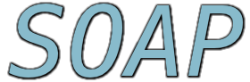
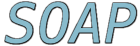

Track on Service-Oriented Architectures and Programming
Pau, France
April 9-13, 2018

SAC 2018
Call for papers
From the engineering point of view, there are open issues at many levels. Among others, at the system design level, both traditional approaches based on UML and approaches taking inspiration from business process modelling, e.g. BPMN, are used. At the composition level, orchestration and choreography are continuouslsy improved both formally and practically, with an evident need for their integration in the development process. At the description and discovery level there are two separate communities pushing respectively the semantic approach (ontologies, OWL, ...) and the syntactic one like WSDL. In particular, the role of discovery engines and protocols is not clear. In this respect we still lack adopted standards: UDDI looked to be a good candidate, but it is no longer pushed by the main corporations, and its wide adoption seems difficult. Furthermore, a recent implementation platform, the so-called REST services, is emerging and competing with classic Web Services. Finally, features like Quality of Service, security and dependability need to be taken seriously into account, and this investigation should lead to standard proposals.
From the foundational point of view, researchers have discussed widely in the last years, and many attempts to use formal methods for specification and verification in this setting have been made. Session correlation, service types, contract theories and communication patterns are only a few examples of the aspects that have been investigated. Moreover, several formal models based upon automata, Petri nets and algebraic approaches have been developed. However, most of these approaches concentrate only on a few features of Service-Oriented Systems in isolation, and a comprehensive approach is still far from being achieved. Our track aims at bringing together researchers and practitioners having the common objective of transforming SOP into a mature discipline with both solid scientific foundations and mature software engineering development methodologies supported by dedicated tools. In particular, we will encourage works and discussions about what SOP still needs in order to achieve its original goal.
Major topics of interest will include:
- Formal methods for Service-Oriented Computing
- Notations, models, and standards for Service-Oriented Computing
- Tools and Middlewares for Service-Oriented Development
- Service-Oriented Programming Languages
- Service-Oriented Programming in dynamic Open Service Ecosystems
- Service Choreographies and Protocol-Driven Service Development
- Service Interfaces and Communication Technologies (e.g., REST)
- Microservices and Scalable Service-Oriented Computing
- Engineering methodologies and Patterns for Service-Oriented Software
- Static Analysis and Testing of Service-Oriented applications
- Adaptability, Dependability, and Fault handling in Service Systems
- Security in Service-Oriented Architectures
- Quality of Service and Performance Analysis
- Industrial deployment of tools and methodologies, case studies
- Service application case studies
- Trust and Services
- Sustainability and Services, Green Computing
- Cloud Computing and Services
- Services and Big Data
- IoT and Cloud-based Services
Important Dates
- September 15, 2017: Submission of regular papers and SRC research abstracts
- November 10, 2017: Notification of paper and SRC abstracts acceptance/rejection
- November 25, 2017: Camera-ready copies of accepted papers/SRC abstracts
- December 10, 2017: Author registration due date
Submissions
Authors are invited to submit original unpublished papers. Submission of the same paper to multiple tracks is not allowed. Peer groups with expertise in the track focus area will double-blindly review submissions. Accepted papers will be published in the annual conference proceedings. SOAP track chairs will not submit to the track. Submissions from SOAP PC members and from PC members and track chairs of other SAC tracks are welcome. Submission guidelines can be found on the SAC 2018 website. Prospective papers should be submitted to the track using the provided automated submission system. Please pay attention to ensure anonimity of your submitted manuscript as detailed in the submission page so to allow for double-blind review. Papers not satisfying this constraint will be automatically rejected. See the SAC site for the page constraints. For each accepted paper, an author or a proxy attending SAC MUST present the paper. This is a requirement for the paper to be included in the ACM/IEEE digital library.
Paper registration is required, allowing the inclusion of the papers, posters, or SRC abstracts in the conference proceedings. An author or a proxy attending SAC MUST present the paper. This is a requirement for the presented work to be included in the ACM/IEEE digital library. No-show of registered papers, posters, and SRC abstracts will result in excluding them from the ACM/IEEE digital library.
Please submit your contribution via SAC 2018 submission site.Special Issue
Student Research Competition Program
As before, SAC 2018 organizes a Student Research Competition (SRC)
Program to provide graduate students the opportunity to meet and
exchange ideas with researchers and practitioners in their areas of
interest. For guidelines and information about the SRC program:
http://www.sigapp.org/sac/sac2018/src.html.
Submission of research abstracts to the SRC
program should be in electronic form
via SAC 2018 SRC papers submission site.
Submission of the same abstract to multiple tracks is not allowed.
All research abstract submissions will be reviewed by researchers
and practitioners with expertise in the track focus area to which
they are submitted. Authors of selected abstracts will have the
opportunity to give poster presentations of their work and compete
for three top-winning places. The Student Research Competition
committee will evaluate and select First-, Second-, and Third- place
winners. The winners will receive cash awards and SIGAPP recognition
certificates during the conference banquet. Authors of selected
abstracts are eligible to apply to the SIGAPP Student Travel Award
program for support.
Program Committee
Track Chairs
- Massimo Bartoletti
bart @ unica.it
Università di Cagliari, Italy - Luís Cruz-Filipe
lcf @ imada.sdu.dk
University of Southern Denmark, Denmark - Gwen Salaün
gwen.salaun @ inria.fr
Université Grenoble Alpes, France
Steering Committee
- Claudio Guidi, italianaSoftware, Italy
- Ivan Lanese, University of Bologna, Italy and INRIA, France
- Manuel Mazzara, Innopolis University, Russia
- Fabrizio Montesi, University of Southern Denmark, Denmark